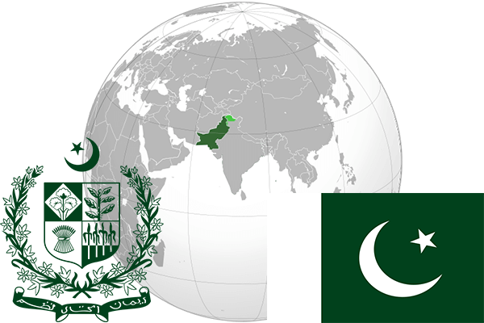

To`liq nomi: Pokiston Islom Respublikasi
Region: Osiyo janubida
Qonunchilik shakli: Federativ respublika
Mustaqillik kuni: 14 avgust 1947 (Birlashgan Qirollikdan)
Poytaxt: Islomobod
Maydoni: 803,940 km²
Chegaradosh davlatlari: Afg’oniston, Eron, Hindiston, Xitoy
Aholisi: 207 774 520 (2017-yil)
Aholi zichligi: 258,45/км²
Aholining o`rtacha yoshi: 66,40 yil (2015-yil)
Rasmiy tili: Urdu va Ingliz
Dini: Islom
Pul birligi: Pokiston rupiyasi
Telefon prefiksi: +92
Internet domen: .pk
Xalqaro tashkilotlarga a`zoligi: BMT, SHHT.
Dengiz va okeanlarga chiqishi: Araviy dengizi, Hind okeani
YIM: Butun: $984.205 mlrd.(2016-yil) Jon boshiga: $5,084
Yirik shaharlari: Karachi, Lahor, Feysalobod, Haydarobod, Peshavor, Islomobod.